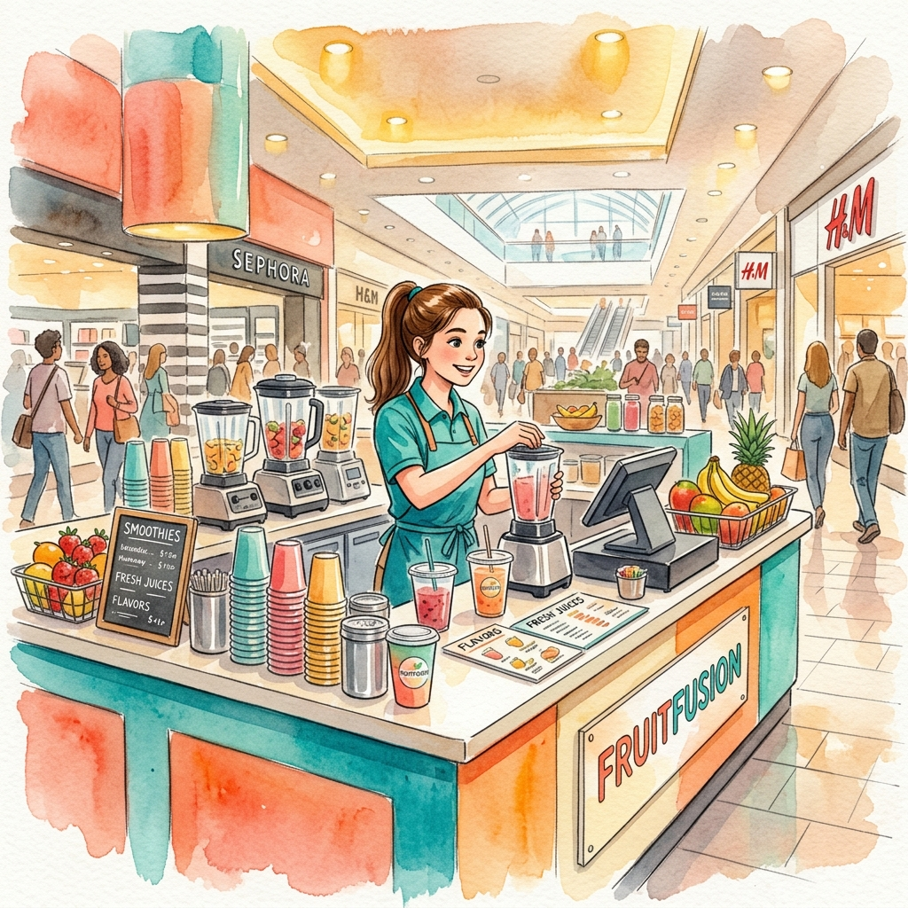
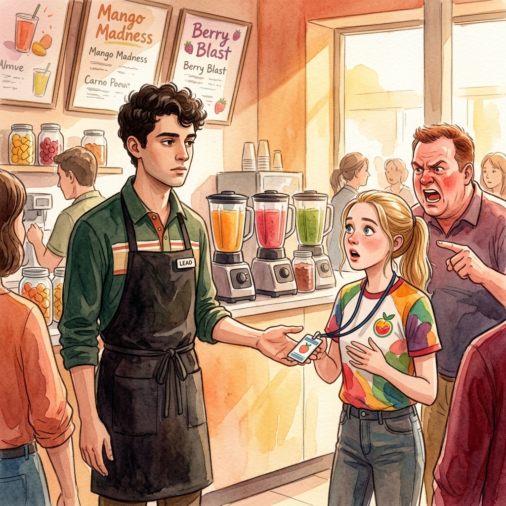
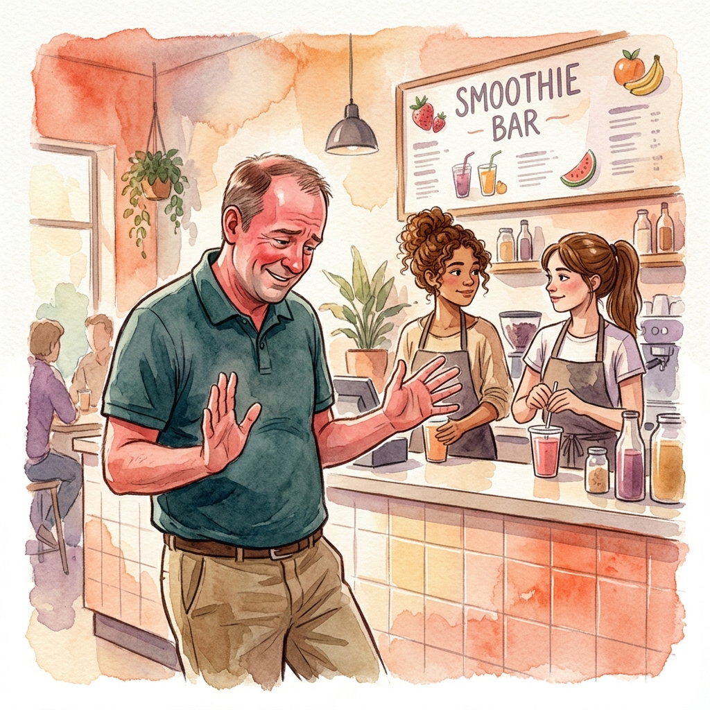
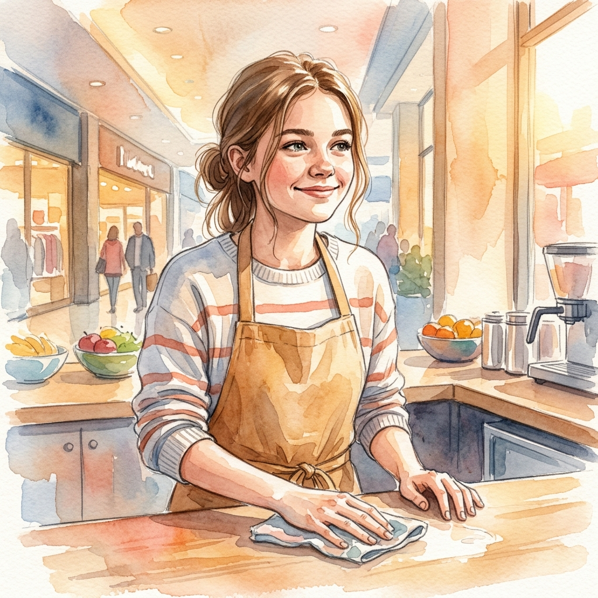

A Story in Three Acts
The Smoothie
Stand Bluff
一个假装开除的把戏，让愤怒的顾客自己道了歉
Taylor was seventeen and working weekends at a mall smoothie stand when she learned that the best way to handle an angry customer was not to argue back.


Her shift lead, Ethan, had worked out the tactics first. One Saturday, a man in a polo shirt started yelling because his drink was not sweet enough. Before Taylor could respond, Ethan stepped in, stone-faced.
Ethan
"Taylor, hand over your badge. You are suspended for the rest of the day — and I am docking your pay."
Taylor played along, eyes wide.
Taylor
"Please, Ethan. I need that money for my phone bill."

The man went quiet. What had been intimidating thirty seconds ago — a grown adult, red-faced, leaning over the counter — suddenly looked small. He capitulated completely, apologizing twice before he left.
Ethan had handled the whole thing with tact: no argument, no raised voice, just a mirror held up to the customer's own behavior.

They have used the trick a dozen times since. It works almost every time — and watching someone realize their words could actually cost a teenager their pay is, Taylor says, deeply satisfying.
Comprehension
Question 01
What did Ethan do when the customer started yelling at Taylor?
Question 02
In the story, "capitulated" most likely means...
- Abecame angrier and louder
- Bgave in and backed down completely
- Cwalked away without saying anything
- Dasked to speak to the manager
Question 03
为什么这个假开除的把戏几乎每次都有效？顾客的心理是什么？
Question 04
用 tactics 造一个句子（不超过 15 个词）